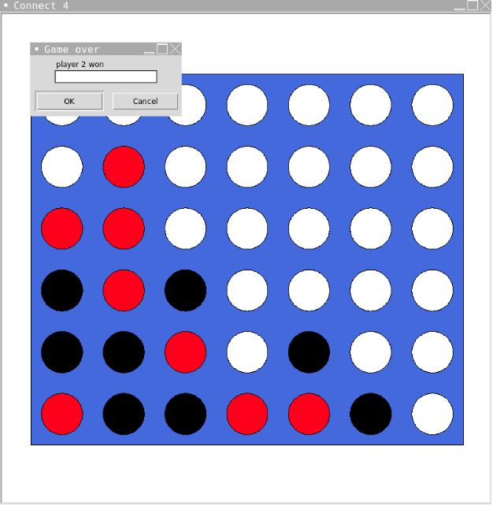
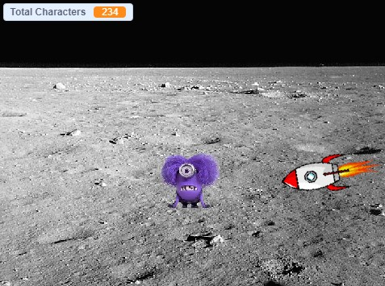
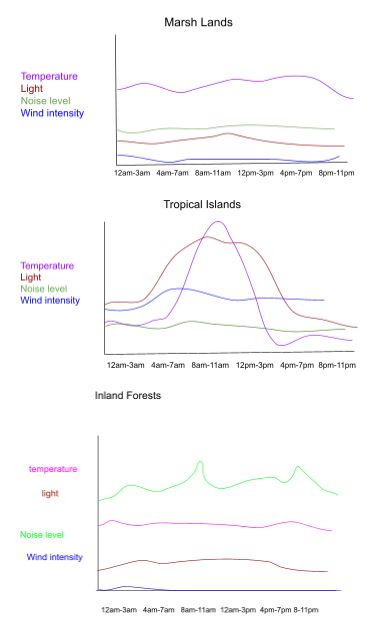

For my first project we made a totally real and accurate simulation for what would happen if you were a minion in space and were about to get hit by an asteroid :)
1.2.5 - Connect Four!

For my second project my partner and I made a working, playable connect four board. In this game you are able to choose between playing with a friend or playing against an AI b
1.3.1 - Retirement E-card!
For my third project my partner and I made a E-card for a senior citizen congratulating them on their retirement. :)
Scratch - Minion Grabber!

For my fourth project we made a game in scratch that allowed the user to navigate a spaceship around on the moon to hit all of the minions.
3.1.6 - Data Analysis!

For my fifth project we analyzed data. The PLTW assignment had us interpreting data from a space rover. Data was given in a very compressed format and had to be both visualized and sorted. Using the data we deciphered, we found that the rover was located on a desert plain. This conclusion came about due to the constant loud sounds and varying regularity of winds that were only from desert plains.